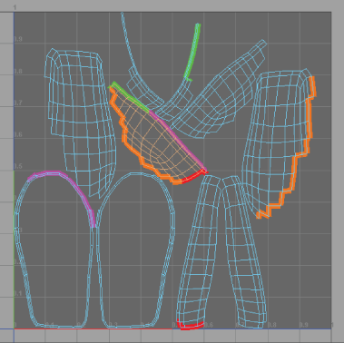

显示 UV 壳上连接的边
要对具有许多 UV 壳的模型执行 UV 映射操作时，了解哪些壳边已连接很有帮助。
注：
连接的边仅显示在
UV 编辑器
中。
显示 UV 壳上连接的边
按 8 键。
各组连接的边将以不同的颜色显示，以便于识别共有的边。
提示：
您可以通过选择
“显示
>
多边形
>
边宽度”(Display > Polygons > Edge Width)
调整壳边界的宽度。
或者，您可以按 Shift 键并在 2D 视图中单击鼠标右键，然后选择
“切换壳边界”(Toggle Shell Borders)
。

相关主题
UV 编辑器概述
分离和附加 UV 壳
父主题：
显示和选择 UV